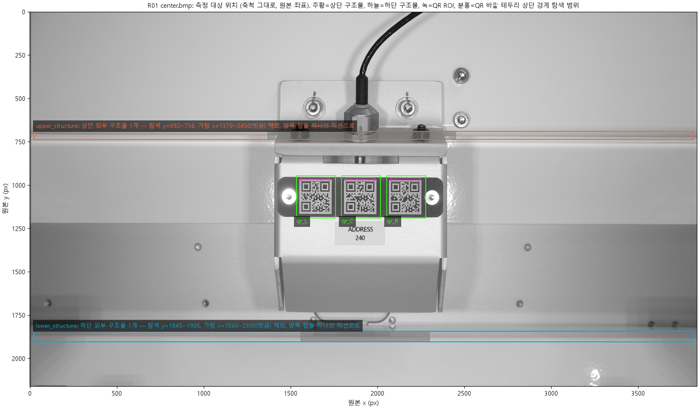
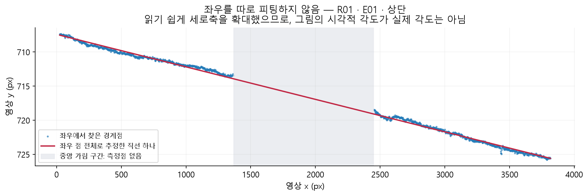
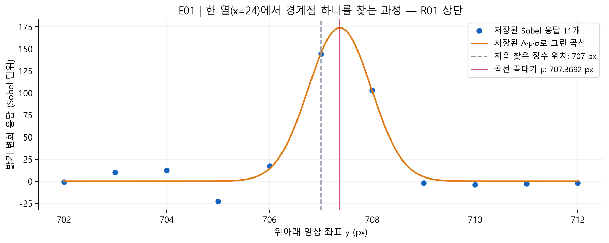
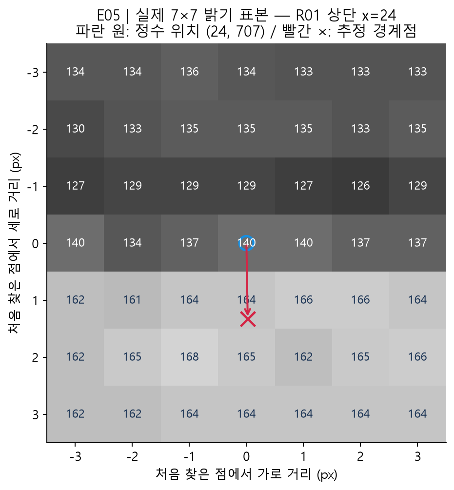
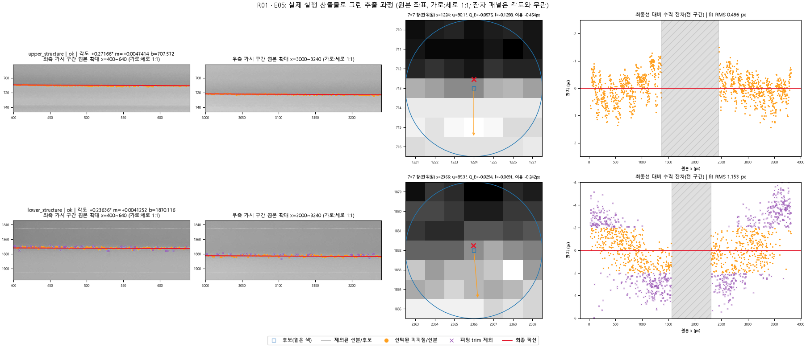
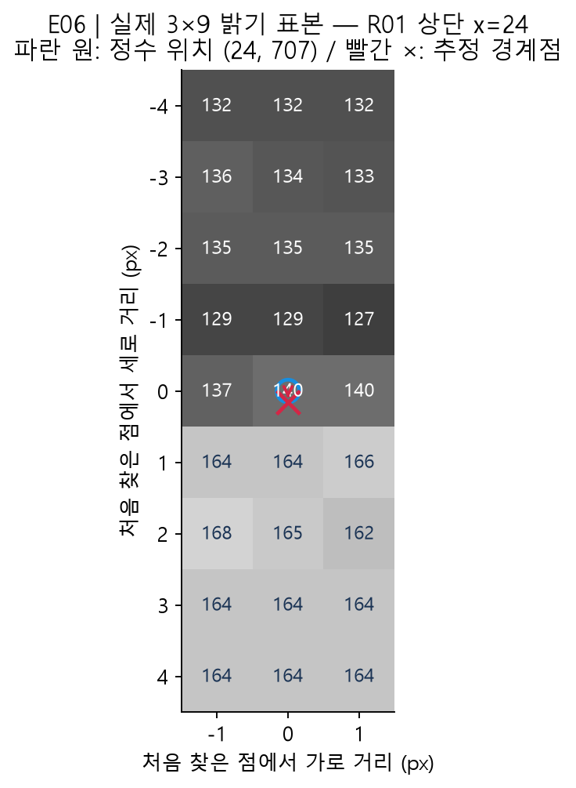
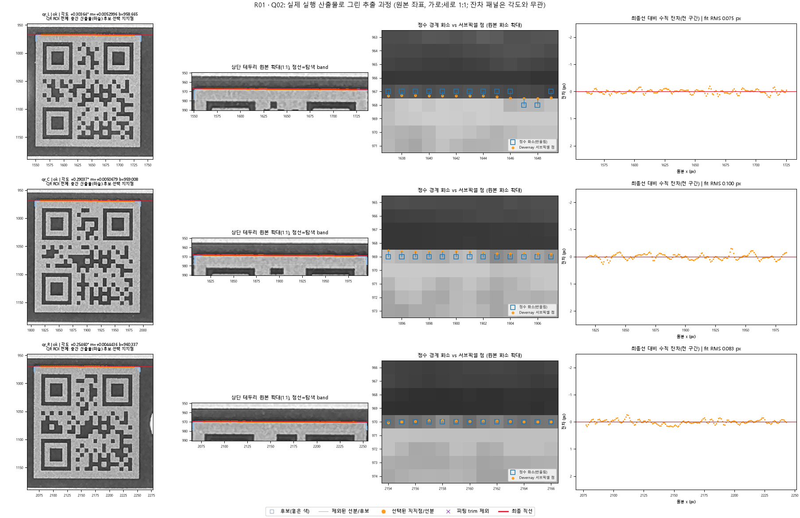
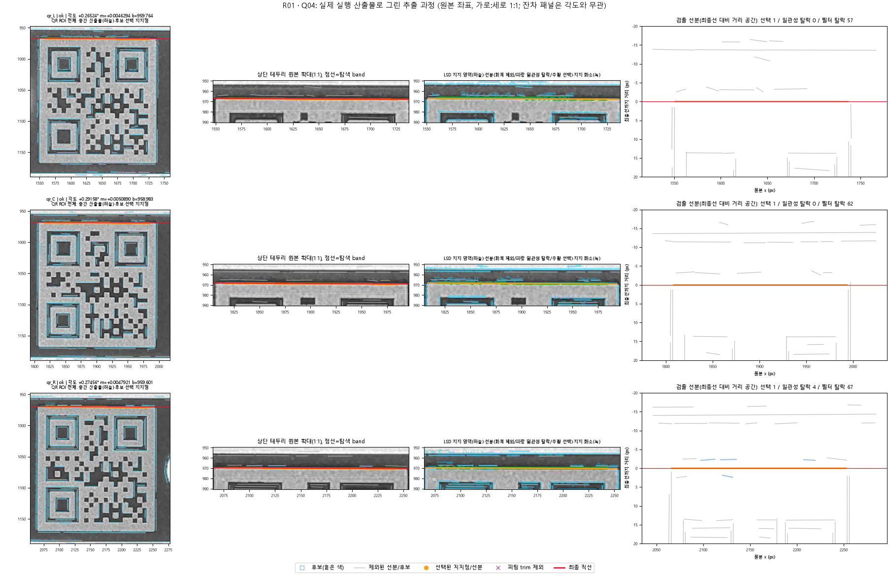

먼저 볼 내용
| 방법 | 점 또는 선분을 만드는 방식 | 최종 측정 대상 | 구현 근거의 상태 |
|---|---|---|---|
| E01 | 세로 밝기 변화에 가우시안 곡선 → 꼭대기 위치 | 상단·하단 구조물 각 1선 | 논문의 세부 위치 계산 적용 / 앞뒤 과정 변경 |
| E02 | Canny 경계 → Devernay의 소수점 위치 보정 | 상단·하단 구조물 각 1선 | 저자 검출 코드 유지 / 대상 선택 규칙 추가 |
| E05 | 7×7 밝기 분포의 모멘트 → 위치 보정 | 상단·하단 구조물 각 1선 | 논문의 ramp-edge 식 구현 / 흐림 폭 가정 |
| E06 | 3×9 밝기 합 → 픽셀 안의 경계 위치 | 상단·하단 구조물 각 1선 | PAE 기본식 부분 구현 / 창·밝기 추정 변경 |
| Q02 | Canny–Devernay 경계점 중 QR 윗변 선택 | QR 3개 각각의 윗변 | 저자 검출 코드 유지 / 대상 선택 규칙 추가 |
| Q04 | LSD 선분 → 윗변 선분 선택 → 선분 위 표본 | QR 3개 각각의 윗변 | 저자 검출 코드 유지 / 선분 선택·통합 추가 |
아래 설명은 실제 C++ 코드, 설정 파일, 저장된 중간값과 그림을 대조해 작성했습니다. 새 검출·재피팅·통계 검정은 실행하지 않았습니다. 숫자는 기존 기록의 발췌이며, 설명용 그래프도 저장된 값으로 그렸습니다.
읽는 순서: 먼저 측정 영역과 공통 피팅을 보고, 각 방법의 ‘실제 처리 순서 → 실제 점 하나 → 학술 근거와 자체 설정’을 읽으면 됩니다. 긴 계산식과 전체 기록은 펼쳐서 확인하도록 두었습니다.
작성일 2026-10-30 · 검토 대상 E01/E02/E05/E06/Q02/Q04 · 기존 결과 56건. 이 문서는 E05의 재채택이나 기존 후보 목록 변경을 뜻하지 않습니다.
1. 이미지에서 어디를 측정했나
측정 입력은 1차 center.bmp 1장과 2차 center1·2·3.bmp 3장입니다. 모두 3840×2160 원본을 회색조로 읽었습니다. 측정 좌표에 맞추려고 이미지를 회전·정합·확대하지 않았습니다. 방법별 평활 처리는 아래에 따로 설명합니다.

| 대상 | 실제로 선택한 경계 | 사용하지 않은 부분 |
|---|---|---|
| 상단 구조물 | 밝기가 위쪽의 어두움에서 아래쪽의 밝음으로 바뀌는 경계 하나. 좌우 점을 한데 모아 직선 1개. | 중앙 커넥터·장착부로 가려진 부분. 구조물의 모든 경계를 쓰지는 않음. |
| 하단 구조물 | 같은 밝기 방향의 경계 하나. 좌우 점을 한데 모아 직선 1개. | 중앙 하단 장착물·반사부. 위·아래 여러 줄을 평균하지 않음. |
| QR 3개 | 각 QR 바깥 밝은 사각 테두리의 윗변. 왼쪽·중앙·오른쪽 각 1개, 총 3선. | 아랫변·옆변·내부 검은 무늬·파인더·둥근 모서리는 최종 직선에서 제외. |
정확한 픽셀 범위와 선택 이유
| 대상 | x 범위 | y 탐색 띠 | 제외 x 범위 |
|---|---|---|---|
| 상단 | 24~3816 | 692~736 | 1370~2450 |
| 하단 | 24~3816 | 1845~1905 | 1560~2300 |
| QR 왼쪽 | 1560~1725 | 958~978 | 없음 |
| QR 중앙 | 1817~1984 | 958~978 | 없음 |
| QR 오른쪽 | 2077~2243 | 958~978 | 없음 |
위 범위는 양 끝을 포함합니다. QR 검출기에는 각 QR 전체 ROI에 8px 여백을 더한 영상을 주지만, 최종 선택은 표의 윗변 범위로 제한합니다. E02의 검출용 여백은 16px입니다. E01/E05/E06은 미분·주변 창 계산에 필요한 여백을 별도로 읽습니다.
범위의 근거는 R01 영상에서 대상을 식별한 위치와 기존 영역 설정입니다. 논문이 이 좌표를 정해준 것은 아닙니다. 설정 설명상 네 장의 결과를 본 뒤 좌표를 조정한 것은 아니지만, 이 범위가 다른 이동 영상에도 적절하다는 검증과는 별개입니다.
실제 targets.json 확인2. 모인 점으로 어떻게 직선을 만들었나
여섯 방법의 공통 후처리는 Huber 가중 직교 직선 피팅입니다. 쉽게 말하면, 점들과의 거리가 작아지는 선을 찾되, 멀리 튀는 점이 직선을 지나치게 끌고 가지 못하도록 영향력을 줄였습니다. 위아래 거리만 최소화하는 일반적인 단순선형회귀와 달리 점에서 선까지의 수직 최단거리를 사용했습니다.
- 첫 선을 찾습니다. 처음에는 모든 입력점의 비중을 같게 두고, 점 분포를 가장 잘 따라가는 방향을 계산합니다.
- 멀리 떨어진 점의 비중을 줄입니다. 현재 선까지 거리가 1.345px 이하면 비중 1, 더 멀면 1.345÷거리로 낮춥니다. 낮춘 비중으로 선을 다시 계산합니다.
- 이 계산을 반복합니다. 최대 100회 또는 설정한 수렴 조건에서 멈춥니다. 이는 계산 종료 조건이며 정렬 성공 기준이 아닙니다.
- 큰 이탈점을 제외하고 다시 맞춥니다. 구조물은 선에서 2px, QR은 1px 밖의 점을 제외하는 단계와 재피팅을 2회 수행합니다. 최소 점 수는 각각 50개·20개입니다.
- 최종 선의 기울기와 각도를 저장합니다. 마지막 선에 대한 거리 기준 통과 여부도 다시 기록합니다. 표의 ‘최종 거리 기준 통과점 수’는 이 기록을 가리킵니다.

기울기: m = Δy / Δx
영상 선 각도: φ = atan(m) × 180 / π
x·y·b의 단위는 px, m의 단위는 px/px이므로 무차원, φ의 단위는 도(°)입니다. 영상에서는 y가 아래로 증가하므로 오른쪽으로 내려가는 선의 φ가 양수입니다. 여기서 φ는 이미지 안 직선의 각도이며, 기계의 θ값을 직접 측정한 결과는 아닙니다.
Huber로 이탈점의 영향력을 낮추는 방식과 C=1.345 상수는 OpenCV 공식 문서: fitLine · DIST_HUBER에 근거가 있습니다. 현재 코드는 cv::fitLine을 호출한 것이 아니라 같은 가중 원리를 배정밀도 C++로 직접 구현했습니다. 추가 제외 거리 2/1px, 최소 점 수, 반복 횟수는 이 프로젝트가 정한 설정입니다. 이 영상에서 적절한지는 별도 검증되지 않았습니다.
수식과 종료 설정까지 확인
wᵢ = 1 (|dᵢ|≤C), 또는 C/|dᵢ| (|dᵢ|>C)
C = 1.345 px
가중 중심을 구하고 2×2 가중 산포 행렬에서 선의 방향을 계산하는 것을 반복합니다. 코드의 수렴 조건은 연속 각도 변화 <10⁻¹³ rad이면서 중심의 x·y 변화가 각각 <10⁻⁹px입니다. 작은 수렴값을 썼다고 그만큼 정확히 측정했다는 뜻은 아닙니다.
line_fit.cpp — huber_line, robust_fit 확인E01 · 가우시안 곡선으로 경계점 찾기
경계 주변에서 밝기가 가장 빠르게 바뀌는 위치를, 매끄러운 종 모양 곡선의 꼭대기로 찾습니다.
여기서 가우시안 곡선을 맞추는 대상은 원래 밝기 자체가 아니라 위아래 밝기 변화량(Sobel 응답)입니다. 흐릿한 경계에서는 밝기가 여러 픽셀에 걸쳐 바뀌므로, 응답의 봉우리가 픽셀 중간에 있을 수도 있다고 보는 것입니다.
- 구조물의 정해진 탐색 띠 안을 x 방향 2px 간격으로 훑습니다. 중앙 가림 구간은 건너뜁니다.
- 3×3 세로 Sobel로 밝기 변화량을 구하고, 각 열에서 어두움→밝음 변화가 가장 큰 정수 y를 찾습니다.
- 그 y의 위아래 5px, 총 11개 응답을 가져옵니다. 이 표본에 가우시안 곡선을 맞춰 높이 A, 꼭대기 위치 μ, 폭 σ를 구합니다. 수치 최적화에는 Nelder–Mead를 사용합니다.
- 수렴하지 않았거나, 곡선 높이가 양수가 아니거나, 꼭대기가 최초 y에서 2px보다 멀면 제외합니다. 통과하면 (그 열의 x, μ)가 경계점 하나입니다.
- 좌우에서 얻은 경계점 전체에 앞의 Huber 피팅을 적용해 구조물 한 개의 직선 하나를 얻습니다. 상단과 하단은 각각 처리합니다.

실제 점 하나: 처음 위치 y=707 → μ=707.369223. 따라서 경계점은 (24, 707.369223)px입니다. 이 점 하나에서 선의 기울기를 구한 것이 아니라 같은 방식으로 모은 많은 점으로 선을 맞췄습니다.
학술 근거를 따른 부분과 달라진 부분
| 구분 | 실제 적용 내용 |
|---|---|
| 논문에서 가져온 핵심 | Fabijańska (2014), Gaussian-Based Approach to Subpixel Detection of Blurred and Unsharp Edges의 III.B: 경사 응답에 가우시안 곡선을 맞추고 중심 μ로 서브픽셀 위치를 얻는 방식. 초기 A=최댓값, μ=중심, σ=표본 구간 크기 규칙도 참조했습니다. |
| 앞단을 바꾼 부분 | 논문의 초기 경계 검출은 Sobel 크기·ISODATA 임계값·골격화입니다. 현재는 세로 Sobel + 지정 띠 안 각 열 최댓값으로 대체했습니다. |
| 뒷단을 바꾼 부분 | 논문 III.C의 곡선 연결은 cubic spline입니다. 현재 목표가 긴 직선이므로 공통 Huber 직선 피팅을 붙였습니다. 따라서 논문 전체 절차를 그대로 재현한 것은 아닙니다. |
| 확인되지 않은 부분 | 세로 방향 고정, 11개 표본, 제외 임계값이 이 경계에서 얼마나 적절한지는 검증되지 않았습니다. 모델식에 출처가 있다는 것과 현재 조합이 검증됐다는 것은 구분해야 합니다. |
설정값은 무엇을 뜻하나
| 설정 | 현재 값 | 근거·확인 상태 |
|---|---|---|
| 표본 창 | 위아래 5px → 11개 | 기존 측정 코드와 표본 수를 맞춘 선택. 해당 영상의 최적값 검증 없음. |
| 최소 Sobel 봉우리 | 8 | 약한 후보를 제외하려는 자체 설정. Sobel 응답 단위이며 원본 밝기 8과 같지 않음. |
| 허용 위치 보정 | 최초 y에서 ±2px | 다른 경계로 넘어가는 것을 막으려는 자체 제한. |
| 최적화 종료 | 최대 800회 / 상대 목적함수 차이 10⁻¹⁰ | 계산용 설정. 영상 각도의 정확도 기준이 아님. |
| 직선 피팅 | 공통 Huber + 거리 2px | 2절의 공통 설정 적용. |
계산식 자세히 보기
목적함수 = Σ[측정 Sobel 응답 − g(y)]²
이 목적함수가 작아지도록 A·μ·σ를 찾습니다. 계산 중 σ의 절댓값을 사용합니다. ‘곡선 피팅으로 점 찾기’와 이후 ‘여러 점에 직선 피팅’은 서로 다른 두 단계입니다.
기존 측정 결과를 따라가 보기
아래는 R01의 저장값입니다. 입력점 수는 공통 피팅 함수에 넘긴 개수이고, 마지막 수는 최종 선과의 거리 기준을 통과한 개수입니다. 소수점 표시는 기존 수치를 옮긴 것으로 정확도 보증 자릿수가 아닙니다.
| 영상 | 대상 | 피팅 입력점 | 최종 거리 기준 통과점 | 기울기 m (px/px) | 영상 선 각도 φ (°) |
|---|---|---|---|---|---|
| R01 | 상단 구조물 | 1346 | 1346 | 0.004760032 | 0.272728 |
| R01 | 하단 구조물 | 1079 | 771 | 0.003718101 | 0.213031 |

상세 그림: 파랑은 후보, 주황은 선택점·선분, 보라 ×는 제외점, 빨강은 최종선입니다. 잔차 그래프는 세로축을 확대하므로 모양만 보고 실제 각도를 읽지 마세요. Q04의 지지 픽셀 진단값은 주 측정값과 별도입니다.
기준 영상 4장 전체 기록 보기
| 영상 | 대상 | 피팅 입력점 | 최종 거리 기준 통과점 | 기울기 m (px/px) | 영상 선 각도 φ (°) |
|---|---|---|---|---|---|
| R01 | 상단 구조물 | 1346 | 1346 | 0.004760032 | 0.272728 |
| R01 | 하단 구조물 | 1079 | 771 | 0.003718101 | 0.213031 |
| R02 | 상단 구조물 | 1349 | 1349 | 0.004768528 | 0.273214 |
| R02 | 하단 구조물 | 1028 | 693 | 0.003828244 | 0.219341 |
| R03 | 상단 구조물 | 1350 | 1350 | 0.004752112 | 0.272274 |
| R03 | 하단 구조물 | 1077 | 765 | 0.003649186 | 0.209082 |
| R04 | 상단 구조물 | 1352 | 1352 | 0.004738865 | 0.271515 |
| R04 | 하단 구조물 | 1051 | 699 | 0.003876366 | 0.222098 |
코드 위치: methods_points.cpp : method_profile_gaussian, 104행부터
E02 · Canny–Devernay로 구조물 경계점 찾기
먼저 경계 후보들을 찾고, 밝기 변화 봉우리 주변 세 값을 이용해 위치를 소수점까지 보정합니다.
- 구조물의 탐색 영역에 주변 16px를 더해 Canny–Devernay 저자 코드에 넣습니다. σ=1 Gaussian 평활로 밝기 변동을 완화합니다.
- 밝기 변화가 주변보다 큰 지점을 남기고, 강한 경계에 이어진 약한 경계도 연결합니다. 강한 경계 임계값은 4, 약한 경계 임계값은 2입니다.
- 경사 봉우리 주변 세 값을 이차곡선으로 해석해, 정수 경계 위치를 소수점 좌표로 보정합니다. 이 과정은 수정하지 않은 저자 코드가 수행합니다.
- 반환된 점 중 지정 띠·가로 범위 안에 있고 중앙 가림 구간 밖인 점만 봅니다. 위→아래 밝아지는 방향이며 세로 밝기 변화가 가로 변화보다 큰 점을 남깁니다.
- 2px 폭의 x 묶음마다 밝기 변화가 가장 강한 점 하나를 고릅니다. 반올림한 좌표는 묶음 선택에만 쓰고, 피팅에는 원래 서브픽셀 좌표를 넣습니다.
- 좌우의 선택점을 합쳐 공통 Huber 피팅으로 구조물별 직선 하나를 구합니다.
R01 상단의 실제 흐름: 주변 영역에서 검출한 점 16,594개 → y 탐색 띠 안 후보 9,768개 → 위치·방향·강도 선택 후 피팅 입력 1,357개 → 최종 거리 기준 통과 1,357개. 각 숫자가 가리키는 처리 단계가 다릅니다.
학술 근거를 따른 부분과 달라진 부분
| 구분 | 실제 적용 내용 |
|---|---|
| 학술 근거 | Grompone von Gioi & Randall (2017), A Sub-Pixel Edge Detector: an Implementation of the Canny/Devernay Algorithm의 Canny 검출 및 Devernay 서브픽셀 위치 보정. 공식 배포본 1.0의 devernay.c/h를 사용했습니다. |
| 원본 유지 | 저자 코드 devernay.c/h는 보관된 공식 배포 ZIP과 바이트 단위로 일치합니다. 이 확인은 검출 핵심 코드에 대한 것이며 프로젝트 전체 절차가 원본과 같다는 의미는 아닙니다. |
| 프로젝트가 추가한 부분 | 구조물 영역 자르기, 밝기 방향·가로세로 경사 조건, 2px 묶음 최강점 선택, Huber 피팅 및 거리 제외를 추가했습니다. |
| 설정 근거의 한계 | 약한 하단 경계도 잡으려 임계값을 낮췄다는 목적은 설정 파일에 있습니다. 4/2라는 숫자가 적절하다는 비교 검증은 없습니다. |
설정값은 무엇을 뜻하나
| 설정 | 현재 값 | 근거·확인 상태 |
|---|---|---|
| Gaussian 평활 | σ=1px | 프로젝트가 선택한 평활 세기. 원본 라이브러리가 받는 매개변수. |
| 경계 임계값 | 강함 4 / 약함 2 | 구조물의 약한 경계를 포함하려는 자체 설정. |
| 가로 묶음 | 2px마다 최강점 1개 | 한 위치의 여러 경계 중 하나를 고르는 자체 규칙. |
| 방향 선택 | gy>0, |gy|>|gx| | 목표가 어두움→밝음의 거의 수평 경계라는 대상 정의에서 추가. |
| 직선 피팅 | 공통 Huber + 거리 2px | 저자 경계 연결 결과에 프로젝트의 직선 피팅을 추가. |
계산식 자세히 보기
보정 위치 = 정수 경계 위치 + δ
a·b·c는 봉우리 주변 세 위치의 경사 크기입니다. 세 점에 맞는 이차곡선의 꼭대기를 계산합니다. 저자 코드는 주된 경사 축 방향으로 보정하며 보정은 ±0.5px 안입니다. 이후 프로젝트의 위치·밝기 방향 필터가 별도로 적용됩니다.
기존 측정 결과를 따라가 보기
아래는 R01의 저장값입니다. 입력점 수는 공통 피팅 함수에 넘긴 개수이고, 마지막 수는 최종 선과의 거리 기준을 통과한 개수입니다. 소수점 표시는 기존 수치를 옮긴 것으로 정확도 보증 자릿수가 아닙니다.
| 영상 | 대상 | 피팅 입력점 | 최종 거리 기준 통과점 | 기울기 m (px/px) | 영상 선 각도 φ (°) |
|---|---|---|---|---|---|
| R01 | 상단 구조물 | 1357 | 1357 | 0.004757343 | 0.272574 |
| R01 | 하단 구조물 | 1527 | 795 | 0.004077687 | 0.233633 |

상세 그림: 파랑은 후보, 주황은 선택점·선분, 보라 ×는 제외점, 빨강은 최종선입니다. 잔차 그래프는 세로축을 확대하므로 모양만 보고 실제 각도를 읽지 마세요. Q04의 지지 픽셀 진단값은 주 측정값과 별도입니다.
기준 영상 4장 전체 기록 보기
| 영상 | 대상 | 피팅 입력점 | 최종 거리 기준 통과점 | 기울기 m (px/px) | 영상 선 각도 φ (°) |
|---|---|---|---|---|---|
| R01 | 상단 구조물 | 1357 | 1357 | 0.004757343 | 0.272574 |
| R01 | 하단 구조물 | 1527 | 795 | 0.004077687 | 0.233633 |
| R02 | 상단 구조물 | 1357 | 1357 | 0.004764340 | 0.272975 |
| R02 | 하단 구조물 | 1515 | 783 | 0.003708403 | 0.212475 |
| R03 | 상단 구조물 | 1357 | 1357 | 0.004746690 | 0.271963 |
| R03 | 하단 구조물 | 1518 | 820 | 0.003805924 | 0.218062 |
| R04 | 상단 구조물 | 1357 | 1357 | 0.004734345 | 0.271256 |
| R04 | 하단 구조물 | 1520 | 819 | 0.004146145 | 0.237555 |
코드 위치: methods_points.cpp : method_canny_devernay, 184행부터
E05 · Zernike 모멘트로 경계점 찾기
경계 주변 작은 사각형의 밝기 분포를 몇 개의 숫자로 요약한 뒤, 경계가 어느 방향으로 얼마나 치우쳐 있는지 계산합니다.
모멘트는 픽셀마다 다른 가중치를 곱해 더한 값입니다. 여기서는 좌우·상하의 밝기 배치와 중심에서 떨어진 밝기 배치를 나타내는 세 가중합을 씁니다. 경계가 창 중앙에서 움직이면 이 값들이 달라진다는 모델에서 위치를 역산합니다.
- σ=1로 평활한 영상에서, 각 열의 위→아래 밝기 변화가 가장 큰 정수 y를 먼저 찾습니다. x는 2px 간격이며 중앙 가림 구간은 건너뜁니다.
- 그 위치를 중심으로 평활 전 원본 밝기 7×7을 가져오고, 패치 평균 밝기를 뺍니다.
- 7×7 픽셀에 세 가지 가중치 표를 곱해 더하여 A11의 두 성분과 A20을 구합니다. 가중치 표는 Zernike 식의 픽셀 면적 적분을 수치 계산해 만들었습니다.
- 모멘트에서 경계에 수직인 방향 ψ와 위치 이동량을 구합니다. 이때 경계가 흐려지는 폭을 σ=1.5px라고 가정합니다. 실제로 측정한 흐림 값은 아닙니다.
- 계산된 방향으로 최초 점을 이동시킵니다. 방향이 예상과 30° 넘게 다르거나, 계산식의 실수 해가 없거나, 이동량이 1.5px보다 크면 제외합니다.
- 남은 2차원 경계점들을 공통 Huber 피팅에 넣어 직선을 얻습니다. 각 패치의 ψ를 평균해 최종 기울기를 만든 것이 아닙니다.

실제 점 하나: (24, 707) → (24.022350, 708.323903)px. 저장된 ψ는 89.032813°이며, 이는 경계에 수직인 국소 방향입니다. 최종 구조물 선 각도 약 0.272°와 같은 종류의 값이 아닙니다.
학술 근거를 따른 부분과 달라진 부분
| 구분 | 실제 적용 내용 |
|---|---|
| 학술 근거 | Renshaw & Christian (2020), Subpixel Localization of Isolated Edges and Streaks in Digital Images의 흐릿한 경계(ramp edge) 위치 추정식. 방향 식 (31), 흐림 폭 관계 (33), 위치 식 (25), ramp 위치 식 (41) 및 비율 식 (42)를 참조했습니다. |
| 수치 구현 | Zernike 가중치의 면적 적분을 픽셀당 64×64 표본으로 근사했습니다. 적분을 코드로 계산한 방식이며 새로운 경계 이론을 만든 것은 아닙니다. 이 근사의 오차 검증은 하지 않았습니다. |
| 프로젝트 선택·추가 | 7×7 크기 선택, 초기 열별 봉우리 검출, 패치 평균 제거, 위치·방향 제한, 공통 직선 피팅을 사용했습니다. 논문은 다른 초기 검출기와 5×5·7×7 등의 창을 허용하므로, 이런 선택 모두를 공식 변조라고 볼 수는 없습니다. |
| 핵심 미확인 가정 | 실제 흐림 σ=1.5px 가정이 위치 계산식에 직접 들어갑니다. 논문 식을 사용했더라도 이 가정이 해당 영상에서 맞는지는 확인되지 않았습니다. 경계용 부분만 구현했으며 논문의 streak 기능은 사용하지 않았습니다. |
설정값은 무엇을 뜻하나
| 설정 | 현재 값 | 근거·확인 상태 |
|---|---|---|
| 초기 평활 / 최소 경사 | σ=1 / 0.5 | 최초 정수 위치를 찾기 위한 자체 설정. |
| 지역 창 / 적분 | 7×7 / 픽셀당 64×64 | 허용 가능한 창 크기의 선택 + 수치 적분 해상도. 해당 값의 최적성·근사 오차 검증 없음. |
| 모델의 흐림 폭 | σ=1.5px, k=1.8 | k=1.8은 참조 논문의 edge 계수. σ=1.5는 계측 없이 설정. |
| 후보 제외 | 보정 ≤1.5px / 방향 편차 ≤30° | 잘못된 후보 제거를 위한 자체 설정. |
| 직선 피팅 | 공통 Huber + 거리 2px | 2절의 공통 설정 적용. |
계산식 자세히 보기
A11′ = Re A11·cosψ + Im A11·sinψ
Q = A20 / A11′
w̄ = 2·k·σ / N, N=7
ℓ = [1−w̄²−√((w̄²−1)²−2w̄²Q)] / w̄²
점 = (x₀, y₀) + (N·ℓ/2)·(cosψ, sinψ)
σ=1인 앞단 평활과 σ=1.5인 모델 흐림 가정은 역할이 다른 값입니다. 앞단에서 영상을 평활했다고 카메라 영상의 실제 흐림 폭이 측정되는 것은 아닙니다.
기존 측정 결과를 따라가 보기
아래는 R01의 저장값입니다. 입력점 수는 공통 피팅 함수에 넘긴 개수이고, 마지막 수는 최종 선과의 거리 기준을 통과한 개수입니다. 소수점 표시는 기존 수치를 옮긴 것으로 정확도 보증 자릿수가 아닙니다.
| 영상 | 대상 | 피팅 입력점 | 최종 거리 기준 통과점 | 기울기 m (px/px) | 영상 선 각도 φ (°) |
|---|---|---|---|---|---|
| R01 | 상단 구조물 | 1204 | 1204 | 0.004741419 | 0.271661 |
| R01 | 하단 구조물 | 1478 | 751 | 0.004125202 | 0.236355 |

상세 그림: 파랑은 후보, 주황은 선택점·선분, 보라 ×는 제외점, 빨강은 최종선입니다. 잔차 그래프는 세로축을 확대하므로 모양만 보고 실제 각도를 읽지 마세요. Q04의 지지 픽셀 진단값은 주 측정값과 별도입니다.
기준 영상 4장 전체 기록 보기
| 영상 | 대상 | 피팅 입력점 | 최종 거리 기준 통과점 | 기울기 m (px/px) | 영상 선 각도 φ (°) |
|---|---|---|---|---|---|
| R01 | 상단 구조물 | 1204 | 1204 | 0.004741419 | 0.271661 |
| R01 | 하단 구조물 | 1478 | 751 | 0.004125202 | 0.236355 |
| R02 | 상단 구조물 | 1235 | 1235 | 0.004753832 | 0.272372 |
| R02 | 하단 구조물 | 1484 | 749 | 0.003614742 | 0.207109 |
| R03 | 상단 구조물 | 1235 | 1235 | 0.004741103 | 0.271643 |
| R03 | 하단 구조물 | 1488 | 828 | 0.003939770 | 0.225731 |
| R04 | 상단 구조물 | 1225 | 1225 | 0.004750725 | 0.272194 |
| R04 | 하단 구조물 | 1484 | 747 | 0.004056829 | 0.232438 |
코드 위치: methods_points.cpp : zernike_masks 및 method_zernike, 266·297행부터
E06 · PAE로 경계점 찾기
경계가 한 픽셀을 가르면, 그 픽셀의 밝기에는 양쪽 면적의 비율이 섞인다는 생각으로 위치를 계산합니다.
예를 들어 어두운 쪽과 밝은 쪽이 한 픽셀을 절반씩 차지하면 중간 밝기가 관측된다는 모델입니다. 실제 구현은 경계 주변 세 열의 밝기 합으로, 픽셀 안에서 경계가 지나가는 위치를 계산합니다.
- 원본 밝기의 중앙차분으로 위아래·좌우 변화를 구합니다. 위→아래 밝아지고 세로 변화가 더 크며, 위아래 이웃보다 경사가 큰 후보를 찾습니다. 각 2px 간격 열에서 가장 강한 후보 하나를 고릅니다.
- 정수 후보를 중심으로 가로 3열, 세로 9행의 원본 밝기를 가져옵니다.
- 맨 윗행 세 픽셀의 평균을 어두운 쪽 밝기 A, 맨 아랫행 평균을 밝은 쪽 밝기 B로 둡니다. 세 열 각각의 밝기 합 S_L·S_M·S_R도 계산합니다.
- 이 작은 창 안 경계를 y_local=a+b_local·x_local+c·x_local²로 놓고 a·b_local·c를 계산합니다. 창 중앙 x_local=0에서 경계 위치가 a이므로, 점은 (원래 x, 최초 y+a)가 됩니다.
- B−A가 3보다 작거나 |a|가 1.5px보다 크면 제외합니다. 남은 점을 공통 Huber 피팅에 넣어 구조물별 직선 하나를 구합니다.

실제 점 하나: A=132, B=164, 세 열 합은 1329·1327·1323입니다. a=0.153646px이므로 (24, 707) → (24, 707.153646)px가 됩니다.
학술 근거를 따른 부분과 달라진 부분
| 구분 | 실제 적용 내용 |
|---|---|
| 이론의 출처 | Trujillo-Pino 등 (2013), Accurate subpixel edge location based on partial area effect의 부분 면적 효과(PAE). 이번 코드 대조에서 직접 확인한 계산 설명은 EdgeLocator 저자 측 구현 설명, Method.md입니다. |
| 실제로 참조한 부분 | Method.md의 기본 2차 경계 모델, 열별 밝기 합으로 a·b·c를 구하는 관계를 자체 C++로 작성했습니다. 저자 전체 구현을 그대로 가져온 방식은 아닙니다. |
| 변경한 부분 | 설명 예시의 3×5 창을 3×9로 확대했습니다. A/B도 설명의 모서리 쪽 픽셀 선택 대신 창의 맨 윗행·아랫행 세 픽셀 평균으로 정했습니다. 높이 변경은 식의 창 높이에 반영됐지만, 현재 영상에서 더 적절하다는 근거가 확보된 것은 아닙니다. |
| 구현 범위·확인 한계 | 평활된 영상용 보정식, floating window, 수직 경계 분기는 사용하지 않았습니다. 2013년 논문 전문을 직접 대조한 상태가 아니므로 논문 전체의 충실한 재현이라고 표현할 수 없습니다. 기본형의 부분 구현입니다. |
설정값은 무엇을 뜻하나
| 설정 | 현재 값 | 근거·확인 상태 |
|---|---|---|
| 밝기 창 | 3×9 | 주변을 더 넓게 읽도록 바꾼 자체 선택. 3×5 대비 타당성 검증 없음. |
| A·B 추정 | 위·아래 끝행 각각 3개 평균 | 국소 밝기 대표값을 정하는 자체 변경. 끝행이 실제로 균일한 면인지는 별도 확인 필요. |
| 최소 경사 / 밝기차 | 1 / B−A≥3 | 잡음·약한 후보 제외용 자체 설정. |
| 위치 보정 제한 | |a|≤1.5px | 멀리 이탈하는 후보 제외용 자체 설정. |
| 직선 피팅 | 공통 Huber + 거리 2px | 2절의 공통 설정 적용. |
계산식 자세히 보기
c = (S_L+S_R−2S_M)/D
b_local = (S_R−S_L)/D
a = [2S_M−(A+B)H]/D − c/12
경계점 = (x₀, y₀+a)
이 계산은 작은 창 안에 어두운 쪽과 밝은 쪽의 대표 밝기를 둘 수 있고, 경계가 2차 곡선으로 근사된다는 모델을 전제로 합니다. A/B를 잘못 잡으면 이 식에 넣을 숫자부터 달라집니다.
기존 측정 결과를 따라가 보기
아래는 R01의 저장값입니다. 입력점 수는 공통 피팅 함수에 넘긴 개수이고, 마지막 수는 최종 선과의 거리 기준을 통과한 개수입니다. 소수점 표시는 기존 수치를 옮긴 것으로 정확도 보증 자릿수가 아닙니다.
| 영상 | 대상 | 피팅 입력점 | 최종 거리 기준 통과점 | 기울기 m (px/px) | 영상 선 각도 φ (°) |
|---|---|---|---|---|---|
| R01 | 상단 구조물 | 1323 | 1323 | 0.004761980 | 0.272839 |
| R01 | 하단 구조물 | 1452 | 801 | 0.003364418 | 0.192766 |

상세 그림: 파랑은 후보, 주황은 선택점·선분, 보라 ×는 제외점, 빨강은 최종선입니다. 잔차 그래프는 세로축을 확대하므로 모양만 보고 실제 각도를 읽지 마세요. Q04의 지지 픽셀 진단값은 주 측정값과 별도입니다.
기준 영상 4장 전체 기록 보기
| 영상 | 대상 | 피팅 입력점 | 최종 거리 기준 통과점 | 기울기 m (px/px) | 영상 선 각도 φ (°) |
|---|---|---|---|---|---|
| R01 | 상단 구조물 | 1323 | 1323 | 0.004761980 | 0.272839 |
| R01 | 하단 구조물 | 1452 | 801 | 0.003364418 | 0.192766 |
| R02 | 상단 구조물 | 1335 | 1335 | 0.004772077 | 0.273418 |
| R02 | 하단 구조물 | 1467 | 794 | 0.003612481 | 0.206979 |
| R03 | 상단 구조물 | 1337 | 1337 | 0.004762116 | 0.272847 |
| R03 | 하단 구조물 | 1469 | 810 | 0.003580114 | 0.205125 |
| R04 | 상단 구조물 | 1332 | 1332 | 0.004750703 | 0.272193 |
| R04 | 하단 구조물 | 1468 | 788 | 0.003753871 | 0.215080 |
코드 위치: methods_points.cpp : method_pae, 392행부터
Q02 · Canny–Devernay로 QR 윗변 경계점 찾기
E02와 같은 경계 검출기를 사용하지만, QR 세 개 각각의 흰 바깥 테두리 윗변만 골라 직선으로 만듭니다.
- 왼쪽·중앙·오른쪽 QR 각각의 전체 ROI에 8px 여백을 더합니다. 이 단계에서는 QR 내부 무늬도 검출 대상 영상에 포함됩니다.
- Canny–Devernay를 실행합니다. 평활 σ=1, 강한 경계 임계값 30, 약한 경계 임계값 15로, 구조물용 E02와 임계값이 다릅니다.
- 저자 코드가 경계의 정수 후보를 구하고, 봉우리 주변 세 값으로 서브픽셀 위치를 보정합니다.
- 이 중 y=958~978과 QR별 x 범위 안에서, 위가 어둡고 아래가 밝으며 세로 변화가 큰 점만 남깁니다. 따라서 내부 무늬를 포함한 검출 결과에서 흰 테두리의 윗변만 선택됩니다.
- x를 1px 폭으로 묶어 가장 강한 점 하나씩 남깁니다. 각 QR의 점들을 따로 공통 Huber 피팅에 넣어 QR별 직선 1개, 총 3개를 구합니다.
R01 왼쪽 QR의 실제 흐름: QR 주변 영역에서 검출된 점 4,726개 → y 띠 안 후보 207개 → 피팅 입력 166개 → 최종 거리 기준 통과 166개. 중앙과 오른쪽도 각각 피팅했습니다.
QR 디코딩이나 파인더 중심·코너 검출로 구한 선이 아닙니다. QR의 밝은 바깥 테두리를 일반적인 밝기 경계로 취급했습니다.
학술 근거를 따른 부분과 달라진 부분
| 구분 | 실제 적용 내용 |
|---|---|
| 학술·구현 근거 | Grompone von Gioi & Randall (2017), A Sub-Pixel Edge Detector: an Implementation of the Canny/Devernay Algorithm의 공식 Devernay 1.0 코드. 검출 핵심은 E02와 같습니다. |
| 프로젝트가 추가한 부분 | QR별 ROI, 상단 띠, 모서리를 피한 x 범위, 밝기 방향 필터, 1px 묶음 최강점 선택과 공통 Huber 피팅입니다. |
| E02와 다른 부분 | 임계값 4/2→30/15, 가로 묶음 2px→1px, 최종 제외 거리 2px→1px, 최소 점 수 50→20으로 설정했습니다. 이 차이는 대상별 설정이며 논문이 자동 결정한 값이 아닙니다. |
| 확인되지 않은 부분 | 이 임계값·영역에서 특정 경계를 일관되게 잡는지에 대한 별도 타당성 검증은 없습니다. 네 장에서 선이 산출됐다는 사실까지만 기존 기록으로 확인됩니다. |
설정값은 무엇을 뜻하나
| 설정 | 현재 값 | 근거·확인 상태 |
|---|---|---|
| 평활 / 경계 임계값 | σ=1 / 강함 30, 약함 15 | QR용 자체 설정. 저자 코드의 입력값. |
| 영역 | 각 QR 전체 ROI+8px → 상단 띠 선택 | 최종적으로 윗변만 사용. 아랫변과 옆변은 사용하지 않음. |
| 가로 묶음 | 1px마다 최강점 1개 | 짧은 윗변에서 점을 더 촘촘히 유지하려는 선택. |
| 직선 피팅 | 공통 Huber / 거리 1px / 최소 20개 | E02보다 엄격한 거리 설정. 해당 숫자의 적합성 검증 없음. |
계산식 자세히 보기
보정 위치 = 정수 경계 위치 + δ
a·b·c는 봉우리 주변 세 위치의 경사 크기입니다. 세 점에 맞는 이차곡선의 꼭대기를 계산합니다. 저자 코드는 주된 경사 축 방향으로 보정하며 보정은 ±0.5px 안입니다. 이후 프로젝트의 위치·밝기 방향 필터가 별도로 적용됩니다.
기존 측정 결과를 따라가 보기
아래는 R01의 저장값입니다. 입력점 수는 공통 피팅 함수에 넘긴 개수이고, 마지막 수는 최종 선과의 거리 기준을 통과한 개수입니다. 소수점 표시는 기존 수치를 옮긴 것으로 정확도 보증 자릿수가 아닙니다.
| 영상 | 대상 | 피팅 입력점 | 최종 거리 기준 통과점 | 기울기 m (px/px) | 영상 선 각도 φ (°) |
|---|---|---|---|---|---|
| R01 | 왼쪽 QR | 166 | 166 | 0.005299588 | 0.303641 |
| R01 | 중앙 QR | 168 | 168 | 0.005067917 | 0.290368 |
| R01 | 오른쪽 QR | 167 | 167 | 0.004443616 | 0.254599 |

상세 그림: 파랑은 후보, 주황은 선택점·선분, 보라 ×는 제외점, 빨강은 최종선입니다. 잔차 그래프는 세로축을 확대하므로 모양만 보고 실제 각도를 읽지 마세요. Q04의 지지 픽셀 진단값은 주 측정값과 별도입니다.
기준 영상 4장 전체 기록 보기
| 영상 | 대상 | 피팅 입력점 | 최종 거리 기준 통과점 | 기울기 m (px/px) | 영상 선 각도 φ (°) |
|---|---|---|---|---|---|
| R01 | 왼쪽 QR | 166 | 166 | 0.005299588 | 0.303641 |
| R01 | 중앙 QR | 168 | 168 | 0.005067917 | 0.290368 |
| R01 | 오른쪽 QR | 167 | 167 | 0.004443616 | 0.254599 |
| R02 | 왼쪽 QR | 166 | 166 | 0.004800374 | 0.275039 |
| R02 | 중앙 QR | 168 | 168 | 0.004870459 | 0.279055 |
| R02 | 오른쪽 QR | 167 | 167 | 0.004600549 | 0.263590 |
| R03 | 왼쪽 QR | 166 | 166 | 0.004747233 | 0.271994 |
| R03 | 중앙 QR | 168 | 168 | 0.004892606 | 0.280323 |
| R03 | 오른쪽 QR | 167 | 167 | 0.004540360 | 0.260142 |
| R04 | 왼쪽 QR | 166 | 166 | 0.004734512 | 0.271266 |
| R04 | 중앙 QR | 168 | 168 | 0.004839857 | 0.277301 |
| R04 | 오른쪽 QR | 167 | 167 | 0.004567590 | 0.261702 |
코드 위치: methods_points.cpp : method_canny_devernay, 184행부터. QR 설정으로 호출.
Q04 · LSD로 QR 윗변 선분 찾기
영상에서 짧은 선분들을 먼저 검출하고, 그중 QR 윗변에 해당하는 선분을 골라 최종 직선을 만듭니다.
LSD는 밝기 변화의 방향이 비슷한 주변 픽셀을 묶고, 길쭉한 영역에 선분을 맞춥니다. 무작위 방향에서도 이런 모양이 우연히 나올 가능성을 고려해 선분을 걸러냅니다. 이 검출기의 출력부터 이미 선분 양 끝점 좌표가 존재합니다.
- 각 QR의 전체 ROI+8px 영상에 LSD 1.6 저자 코드를 실행합니다. scale=1.0을 사용하여 원본 크기를 유지하며, 이 설정에서는 저자 코드의 Gaussian 평활·재표본화 분기도 건너뜁니다.
- 검출된 선분 중 영상 각도 절댓값이 5° 이내이고, 중점 y가 윗변 띠 안이며, 지정 x 범위 안의 가시 길이가 10px 이상인 선분을 고릅니다.
- 선분의 양쪽으로 수직 거리 2px 떨어진 밝기를 비교합니다. 아래쪽이 위쪽보다 평균 20 이상 밝은 선분만 남깁니다.
- 남은 선분을 같이 설명하는 직선 가설들을 비교합니다. 가설에서 양 끝점이 모두 1px 이내인 선분들의 길이 합이 가장 큰 가설을 고르고, 그에 속하는 선분들을 선택합니다.
- 선택된 선분 위에 x 간격 1px로 점을 다시 찍습니다. 이렇게 만든 표본을 공통 Huber 피팅에 넣어 최종 직선 하나를 얻습니다. QR 3개에 각각 수행합니다.
R01 왼쪽 QR의 실제 흐름: LSD 선분 187개 → 위치·방향·길이·밝기 필터 통과 1개 → 선택 선분 1개 → 선분 위 표본 167개 → 최종 각도 0.265242°. 167개는 영상에서 독립적으로 찾은 경계점 수가 아닙니다.
학술 근거를 따른 부분과 달라진 부분
| 구분 | 실제 적용 내용 |
|---|---|
| 학술 근거 | Grompone von Gioi 등 (2012), LSD: a Line Segment Detector의 방향 영역 확장, 영역의 선분화, a-contrario/NFA 검출 기준. 공식 LSD 1.6 C 코드의 LineSegmentDetection을 호출했습니다. |
| 원본 유지·설정 변경 | lsd.c/h는 보관된 공식 1.6 ZIP과 바이트 단위로 일치합니다. 저자 기본 설정에서 scale만 0.8→1.0으로 바꿨습니다. 이 값에서는 Gaussian 평활·재표본화도 실행되지 않습니다. 즉 코드 원본은 유지했지만 기본 전처리와 같은 실행 조건은 아닙니다. |
| 프로젝트가 추가한 부분 | QR 영역 입력, 윗변·길이·각도·밝기 필터, 선분 가설의 길이 합 선택, 선분 위 재표본화와 Huber 통합입니다. 이 전체 후처리가 LSD 논문의 원래 알고리즘은 아닙니다. |
| 통계 기준의 의미 | LSD의 NFA는 검출 단계에서 우연한 선분을 제한하기 위한 모델 기준입니다. 네 기준 영상의 기울기 동등성이나 θ 추정 정확도를 검증한 결과가 아닙니다. 또한 논문은 잘라낸 입력 영역과 전체 영상의 검출 결과가 달라질 수 있음을 보여줍니다. |
설정값은 무엇을 뜻하나
| 설정 | 현재 값 | 근거·확인 상태 |
|---|---|---|
| 검출 크기 | scale=1.0 | 저자 기본 0.8에서 변경. 원본 해상도 유지가 목적이며 성능 향상 검증은 아님. |
| 나머지 LSD 설정 | σ_scale=.6 / quant=2 / ang_th=22.5° / log_eps=0 / density=.7 / bins=1024 | 저자 표준 기본값을 유지. σ_scale는 저장되어 있지만 scale=1에서는 평활에 사용되지 않음. ang_th는 내부 방향 허용값이며 아래 5° 필터와 다름. |
| 대상 선분 선택 | |각도|≤5° / 가시 길이≥10px / 밝기차≥20 | QR 윗변을 고르기 위한 자체 규칙. |
| 선분 통합 | 양 끝점 거리≤1px / 길이 합 최대 | 여러 선분을 같은 윗변으로 묶기 위한 자체 규칙. |
| 재표본 / 최종 피팅 | x 간격 1px / Huber 거리 1px | 선분을 표본점으로 바꾸어 통합. 직접 경계점 기반 방법과 입력의 성격이 다름. |
계산식 자세히 보기
후처리의 가설 후보는 각 선분의 직선과 두 선분 중점을 잇는 직선입니다. 길이가 긴 순으로 최대 300개 후보 선분에서 가설을 만들고, 조건에 맞는 선분의 가시 길이 합을 점수로 씁니다. 마지막 표본 생성은 잘린 선분의 가시 x 구간을 1px씩 따라갑니다. 이 점들은 영상 밝기를 다시 읽어 위치를 재검출한 결과가 아닙니다.
기존 측정 결과를 따라가 보기
아래는 R01의 저장값입니다. 입력점 수는 공통 피팅 함수에 넘긴 개수이고, 마지막 수는 최종 선과의 거리 기준을 통과한 개수입니다. 소수점 표시는 기존 수치를 옮긴 것으로 정확도 보증 자릿수가 아닙니다.
| 영상 | 대상 | 피팅 입력점 | 최종 거리 기준 통과점 | 기울기 m (px/px) | 영상 선 각도 φ (°) |
|---|---|---|---|---|---|
| R01 | 왼쪽 QR | 167 | 167 | 0.004629381 | 0.265242 |
| R01 | 중앙 QR | 169 | 169 | 0.005088994 | 0.291575 |
| R01 | 오른쪽 QR | 168 | 168 | 0.004792066 | 0.274563 |

상세 그림: 파랑은 후보, 주황은 선택점·선분, 보라 ×는 제외점, 빨강은 최종선입니다. 잔차 그래프는 세로축을 확대하므로 모양만 보고 실제 각도를 읽지 마세요. Q04의 지지 픽셀 진단값은 주 측정값과 별도입니다.
기준 영상 4장 전체 기록 보기
| 영상 | 대상 | 피팅 입력점 | 최종 거리 기준 통과점 | 기울기 m (px/px) | 영상 선 각도 φ (°) |
|---|---|---|---|---|---|
| R01 | 왼쪽 QR | 167 | 167 | 0.004629381 | 0.265242 |
| R01 | 중앙 QR | 169 | 169 | 0.005088994 | 0.291575 |
| R01 | 오른쪽 QR | 168 | 168 | 0.004792066 | 0.274563 |
| R02 | 왼쪽 QR | 165 | 165 | 0.004857581 | 0.278317 |
| R02 | 중앙 QR | 169 | 169 | 0.004588481 | 0.262899 |
| R02 | 오른쪽 QR | 168 | 168 | 0.004513967 | 0.258629 |
| R03 | 왼쪽 QR | 165 | 165 | 0.004853678 | 0.278093 |
| R03 | 중앙 QR | 169 | 169 | 0.004496757 | 0.257643 |
| R03 | 오른쪽 QR | 168 | 168 | 0.004517702 | 0.258843 |
| R04 | 왼쪽 QR | 162 | 162 | 0.004982443 | 0.285471 |
| R04 | 중앙 QR | 169 | 169 | 0.004384624 | 0.251219 |
| R04 | 오른쪽 QR | 168 | 168 | 0.004606207 | 0.263914 |
코드 위치: methods_segments.cpp : select_and_fit 51행부터, method_lsd 213행부터. lsd.c : scale 분기 2068행부터.
3. 이 보고서로 판단할 수 있는 내용
| 확인한 사항 | 현재 의미 |
|---|---|
| 여섯 방법 모두 기준 영상 네 장에서 선 산출 | E01/E02/E05/E06은 각각 상·하단 8건, Q02/Q04는 각각 QR 3개×4장 12건. 총 56건의 저장 기록이 존재함. |
| 점 검출과 직선 피팅을 구분 | E01/E02/E05/E06/Q02는 영상에서 찾은 경계점, Q04는 검출 선분 위 재표본이 피팅 입력임. |
| 이론·원본 코드의 출처가 있는 부분 | 가우시안 모델, Devernay, Zernike ramp 식, PAE 기본형, LSD, Huber 가중 원리. |
| 추가 설정의 타당성 | 목적이 설명된 설정은 있으나, 그 숫자·변형이 해당 영상에 적절하다는 검증은 별도 문제임. |
| 이번 보고서에 없는 결론 | 기울기 균일성 통계 검정, Y·θ 상관 검정, 실제 경계 정답 대비 정확도, ±0.005° 도달 여부, 방법의 우열 판정. |
방법별로 구분해야 할 지점: E01은 초기 경계 검출과 마지막 연결 방식이 바뀌었고, E02/Q02는 원본 검출기 뒤의 선택 규칙이 추가됐습니다. E05는 흐림 폭 가정이 위치 식에 직접 들어갑니다. E06은 창과 A/B 추정이 변경됐으며 원논문 전문 대조가 완료되지 않았습니다. Q04는 원본 LSD 뒤에서 선분을 고르고 다시 통합하는 과정이 추가됐습니다.
따라서 현재 결과는 “논문 이름 하나의 성능”보다 “그 이론·코드에 이번 영역과 설정을 결합한 구현의 출력”으로 읽는 것이 정확합니다. 이 문서는 그 결합 과정을 공개해 다음 판단에 사용할 수 있게 정리한 것입니다.
부록 A. 학술 자료와 코드 근거
| 적용 방법 | 자료 | 실제로 확인한 범위 |
|---|---|---|
| E01 / S01 | Fabijańska (2014), Gaussian-Based Approach to Subpixel Detection of Blurred and Unsharp Edges | III.A 초기 검출, III.B Gaussian 피팅, III.C 곡선 연결을 대조. 직접 구현한 세부 위치 계산과 전후단 변경을 구분. |
| E02·Q02 / S02 | Grompone von Gioi & Randall (2017), A Sub-Pixel Edge Detector: an Implementation of the Canny/Devernay Algorithm | IPOL 공식 설명과 배포된 저자 C 코드 1.0 대조. 서브픽셀 보정·연결·hysteresis 확인. 논문 전문 전체를 대조했다고 주장하지 않음. |
| E05 / S05 | Renshaw & Christian (2020), Subpixel Localization of Isolated Edges and Streaks in Digital Images | 공개 전문의 모멘트·ramp-edge 식 (25),(31),(33),(41),(42) 대조. streak 부분은 사용하지 않음. |
| E06 / S06 | Trujillo-Pino 등 (2013), Accurate subpixel edge location based on partial area effect EdgeLocator 저자 측 구현 설명, Method.md | 직접 확인한 계산 근거는 저자 측 Method.md의 기본 2차 PAE 설명. 원논문 전문 미대조. 기본형의 일부를 자체 구현. |
| Q04 / S04 | Grompone von Gioi 등 (2012), LSD: a Line Segment Detector 논문·공식 코드 배포 페이지 | 공개 전문의 선분 영역/사각형 모델과 NFA, 공식 LSD 1.6 코드를 대조. ROI 차이에 대한 Fig.19·20도 참고. |
| 공통 피팅 / H | OpenCV 공식 문서: fitLine · DIST_HUBER | 공식 fitLine/DIST_HUBER 문서의 가중 원리와 C=1.345. 현재 프로젝트는 자체 IRLS 구현이며 cv::fitLine 직접 호출이 아님. |
PAE 원문을 직접 확인하지 못한 범위는 그대로 명시했습니다. 출처의 식을 적용한 사실만으로 현재의 창 크기·ROI·임계값까지 학술적으로 검증됐다고 서술하지 않았습니다.
재현 근거 파일: 기존 method_sources.json · 실제 설정값 전체 · 56건 원본 측정 기록 발췌 · 파일 출처·해시·그림 생성 근거
부록 B. 입력과 저장 기록
| ID | 입력 파일 | 구분 | 원본 경로 |
|---|---|---|---|
| R01 | center.bmp | 1차 기준 | C:\Users\SSAFY\Desktop\[기업연계_세메스] 교보재\[기업연계_세메스] 교보재\SSAFY Test Image Set\center.bmp |
| R02 | center1.bmp | 2차 기준 | C:\Users\SSAFY\Desktop\LSJ_Private\자율PJT\analysis\second_data_inspection\extracted\일부 데이터 추출\기준 위치\center1.bmp |
| R03 | center2.bmp | 2차 기준 | C:\Users\SSAFY\Desktop\LSJ_Private\자율PJT\analysis\second_data_inspection\extracted\일부 데이터 추출\기준 위치\center2.bmp |
| R04 | center3.bmp | 2차 기준 | C:\Users\SSAFY\Desktop\LSJ_Private\자율PJT\analysis\second_data_inspection\extracted\일부 데이터 추출\기준 위치\center3.bmp |
입력 SHA-256은 기존 측정 명세와 각 기록의 값을 보존했습니다. 이번 설명 보고서 작성에서 원본 BMP의 내용이나 측정 설정을 변경하지 않았습니다.
기존 코드·설정·중간 기록을 이 보고서 폴더의 evidence에 복사했습니다. 보고서 그림의 계산 예시는 R01 상단 x=24에서 이미 저장되어 있던 값입니다. E01 곡선은 저장된 계수를 평가해 그렸고, E05/E06 패치는 저장된 밝기 행렬을 표시했습니다. 새로운 경계점이나 직선 계수를 추정한 것은 아닙니다.